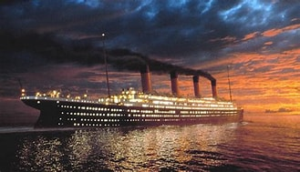
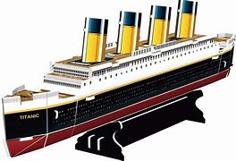
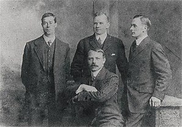

ტიტანიკი იყო ბრიტანული სამგზავრო და ფოსტის გადამზიდავი ოკეანის ლაინერი, რომელსაც მართავდა White Star Line. ტიტანიკი იყო ყველაზე დიდი ხომალდი, რომელიც მცურავი იყო იმ დროს. იგი აშენდა ჰარლანდი და ვოლფის გემთმშენებელი კომპანიის მიერ ბელფასტში.
პირველი კლასის საცხოვრებელი შეიქმნა კომფორტისა და ფუფუნების მწვერვალად, გიმნაზიით, საცურაო აუზით, მოსაწევი ოთახებით, მაღალი კლასის რესტორნებითა და კაფეებით, ვიქტორიანული სტილის თურქული აბანოთი და ასობით მდიდრული კაბინით. მაღალი სიმძლავრის რადიოტელეგრაფის გადამცემი ხელმისაწვდომი იყო სამგზავრო "მარკონიგრამების" გასაგზავნად და გემის ოპერატიული გამოყენებისთვის. Titanic-ს გააჩნდა მოწინავე უსაფრთხოების მახასიათებლები, როგორიცაა წყალგაუმტარი განყოფილებები და დისტანციურად გააქტიურებული წყალგაუმტარი კარები, რაც ხელს უწყობს მის რეპუტაციას, როგორც "ჩაძირვის გარეშე".
ჩაიძირა ჩრდილო ატლანტის ოკეანეში 1912 წლის 15 აპრილს აისბერგთან შეჯახების შედეგად მისი პირველი მოგზაურობისას საუთჰემპტონიდან, ინგლისი, ნიუ-იორკში პირველმა ოფიცერმა გასცა ბრძანება, რომ საჭე მარჯვნივ მოეტრიალებინათ, რითიც, მისი აზრით, აისბერგის აცილებას შეძლებდა, ეს ასე არ მოხდა, რადგან ტიტანიკი მაქსიმალური სიჩქარით მიცურავდა. 37 წამის შემდეგ ტიტანიკი აისბერგს დაეჯახა.2224 მგზავრიდან და ეკიპაჟიდან დაახლოებით 1500 დაიღუპა, რაც ამ დრომდე ერთი გემის ყველაზე სასიკვდილო ჩაძირვა იყო.

უილიამ მერდოკი, 39 წლის, მსახურობდა უამრავ White Star ხომალდზე. ის შეუერთდა ტიტანიკს, როგორც პირველი ოფიცერი და შეჯახების დროს ხიდზე იმყოფებოდა და გემის შემობრუნების ბრძანება გასცა. ის დაეხმარა ქალებისა და ბავშვების სამაშველო ნავებში ჩატვირთვას. ის სტიქიას ვერ გადაურჩა და მისი ცხედარიც ვერ იქნა ამოღებული.
